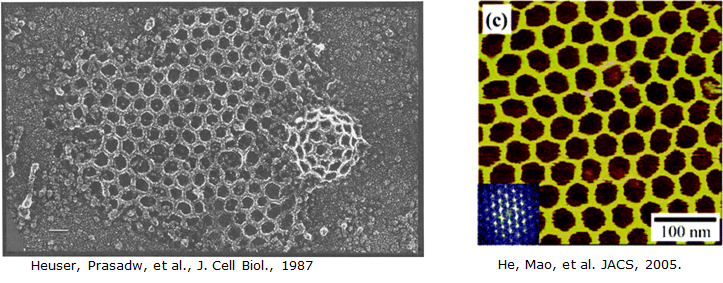
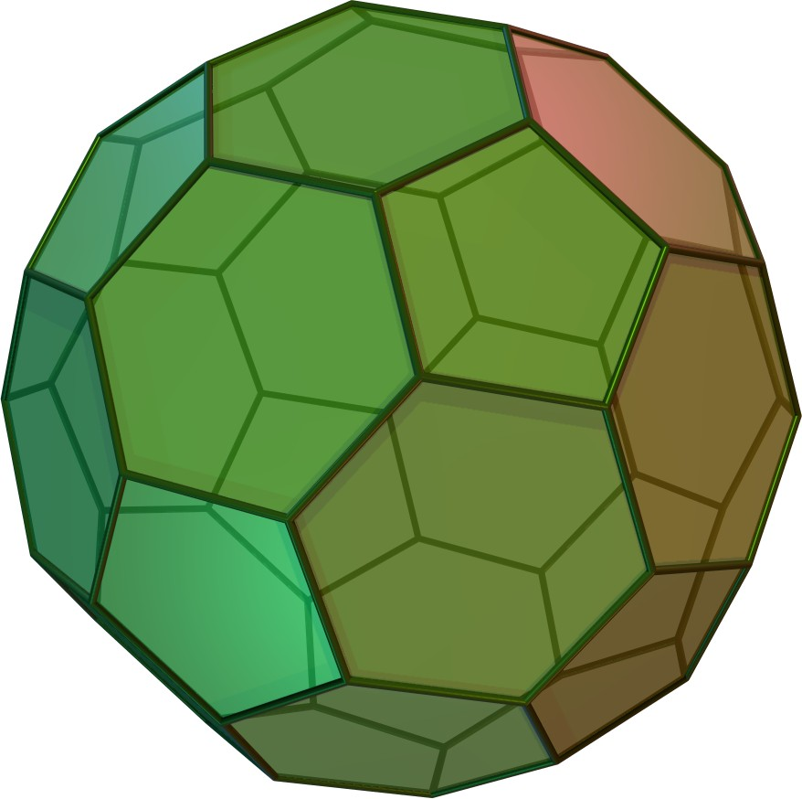

The rational self-assembly of materials is a fundamental prospect in Materials Science and Engineering. Towards that end, we are attempting to develop a DNA-Lipid self-assembling system, which will offer dynamic, mechanical control over the shape of lipid membranes via the tethering of rationally designed DNA constructs. Ultimately this will allow for a deeper understanding and utilization of biological self-assembly and the ability to create dynamic, rationally designed self-assembling systems.
One of the most striking differences between engineered self-assembly and biological self-assembly is that artificial self-assembled systems tend to be static, while biological systems are dynamic. Natural biological systems do not simply form static materials but instead tend to change and restructure themselves to meet their environmental demands. An excellent example of this is found in the lipid membrane of cell walls, where amphiphilic lipids initially assemble into bilayers to define a cell interior and exterior. However, the cell must interact with its environment and in order to do so the cell may undergo endocytosis, in which membrane proteins such as clathrin introduce a membrane curvature into the bilayer, ultimately resulting in a lipid vesicle which transports chemicals from the exterior of a cell into the interior. Understanding and replicating such a process is difficult but potentially offers the ability to control larger scale self-assembled systems dynamically and rationally.

Among the most well studied of biological self-assembling systems is DNA. It can be designed rationally and relatively efficiently with a number of integrated artificial functionalities. In the past DNA self-assembly has been used to build different constructs with near arbitrary control, as well as having been integrated with lipids to a limited extent. Furthermore, DNA itself offers interesting properties as a structural material, due to the different properties of its fundamental forms (single and double stranded) in addition to the myriad of constructed forms it can take. With proper design and control, the high fidelity of DNA base-pairing can induce dynamic mechanical stresses from a number of external factors, including environmental conditions but more importantly factors such as the introduction of specific base pairing sequences. Ultimately, we aim to create a system in which DNA tethered to a lipid membrane can mechanically manipulate the membrane through the self-assembly of the tethered DNA construct.